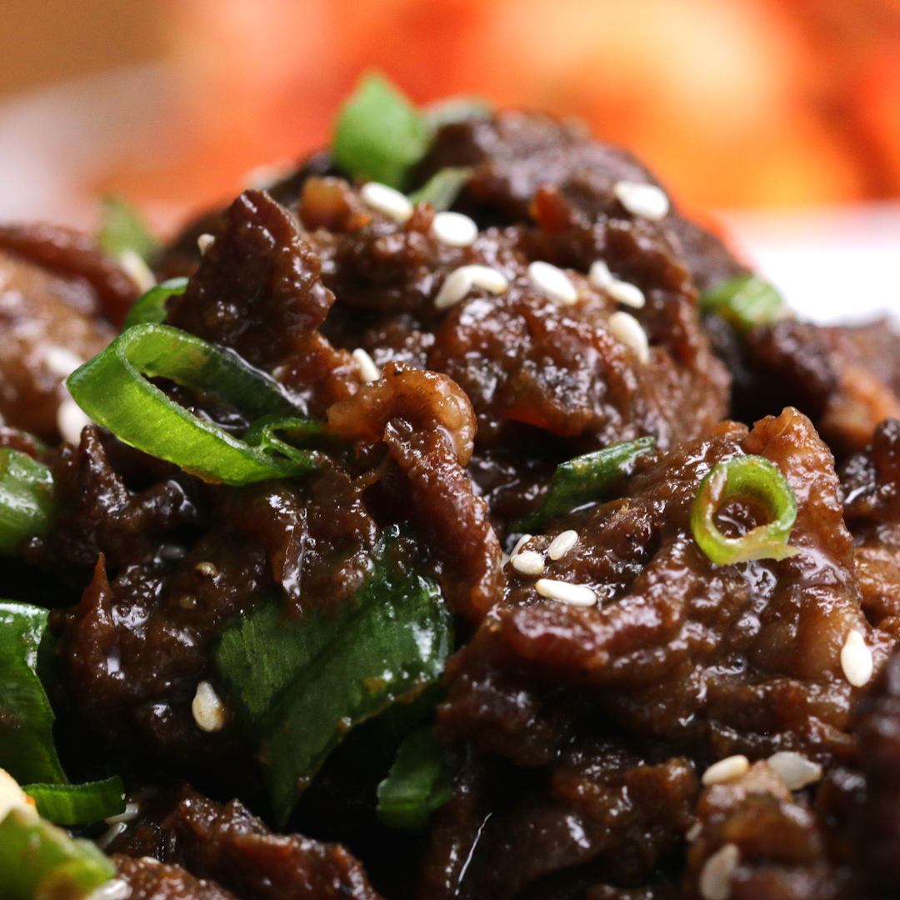

Description
The recipe consist of the many unique spices of korean cuisine. Spicy Pork Belly is an easy recipe to make and you only need to concentrate on the sauce.
The main ingredient is korean red chili paste called gochujang. Gochujang makes many korean dishes spicy and savory. Enjoy making this recipe and make sure you
serve it over rice!
Ingredients
- 1 1/2 lb boneless pork shoulder or pork belly
- 1/2 onion
- 3 stalks of green onion
- 3 cloves of garlic
- 1 teaspoon ginger
- 1/4 cup korean red chili paste, gochujang
- 1 teaspoon red pepper flakes
- 1/4 cup soy sauce
- 3 tablespoons rice wine
- 1 tablespoon sesame oil
- 1 tablespoon sugar
- 1 teaspoon black pepper
- 1 tablespoon canola oil
- sesame seed to garnish
Steps
- Slice the pork into extremely thin slices, then transfer to a large bowl. This works best when the pork is super cold or partially frozen.
- Add in all of the ingredients besides the canola oil, then mix until the pork and the vegetables are evenly coated with the marinade.
- Cover and marinate in the refrigerator for at least 30 minutes.
- Heat the oil in a pan over high heat, add pork, being sure not to crowd the pan, stir-fry the pork in batches until slightly crispy on the edges, about 3-4 minutes. If you’re using pork belly, cook for a bit longer, around 6-7 minutes.
- Sprinkle a bit of sesame seeds on top, then serve with rice!

Description
This is another staple of korean cuisine. The dish is called Korean Style BBQ Beef but the korean name for it is Bulgogi
I used to love eating this when I was a kid. Back when I used to live at home, my mom would take out the portable stove and start searing
the beef onto the stove. The smell would fill the living room and I would salivate like a dog eating peanut butter.
Ingredients
- 1 1/2 lb ribeye steak
- 1 onion
- 3 cloves of garlic
- 1/2 pear
- 3 spring onions
- 3 tablespoons brown sugar
- 1 teaspoon black pepper
- 1/3 cup soy sauce
- 3 tablespoons sesame oil
- 1 tablespoon canola oil
- 1 teaspoon sesame seed
- 2 cups cooked rice
Steps
- Slice the beef as thinly as you can, then set aside in a large bowl. Using frozen or cold beef will make the slicing easier.
- In a blender or food processor, blend the onion chunks, garlic, pear, green onion pieces, brown sugar, pepper, soy sauce, and sesame oil until smooth.
- Pour the marinade over the beef, add the thinly sliced onion, then mix to coat evenly. Cover with plastic wrap and marinate in the fridge for at least 30 minutes, or overnight.
- Heat the canola oil in a large skillet over high heat. Pat the meat dry.
- Being careful not to crowd the pan, sear the marinated beef and onions until browned. Sprinkle with the sliced green onions and sesame seeds.
- Serve with rice and side dishes

Description
The Korean Marinated Short Ribs is the most popular dish in the korean cuisine world. The Korean name for it is Galbi and it is the most traditional dish that Koreans serve in family gatherings.
Today, it is considered a special dish due to the rising cost of meat. My family used to eat it almost every week. Now, it's only whenever I visit home. Please, enjoy this dish!
Ingredients
- 2 1/2 lb korean beef short ribs
- 1/2 asian pear
- 1/2 medium yellow onion
- 1 1/2 pieces fresh ginger
- 5 cloves garlic
- 1/2 cup soy sauce
- 1/2 cup water
- 1/2 cup brown sugar
- 1/4 cup honey
- 1 tablespoon sesame oil
- 1 tablespoon vegetable oil
- 1 green onion
Steps
- Rinse the short ribs under cold water. Soak in fresh cold water for 30 minutes to get rid of any impurities and bone fragments.
- Make the marinade: In a blender, combine the Asian pear, yellow onion, ginger, garlic, soy sauce, water, brown sugar, honey, and sesame oil and blend until smooth.
- Remove the short ribs from the water and pat dry. Transfer to a clean container and pour the marinade over the short ribs. Mix well to make sure the short ribs are evenly coated. Cover and marinate in the refrigerator for at least 4 hours, or overnight.
- Heat 1 tablespoon of vegetable oil in a Korean barbecue griddle, large cast iron skillet, or nonstick pan over medium heat. Working in batches to avoid overcrowding the pan, cook the short ribs until they reach your desired doneness, flipping only once to retain the moisture in the meat, 2–3 minutes per side. When the ribs are almost done cooking, cut between the bones into smaller pieces. If not using a Korean barbecue griddle, use paper towels to absorb any excess sauce as the meat cooks.
- Serve the galbi on a bed of thinly sliced yellow onion and top with the green onion.